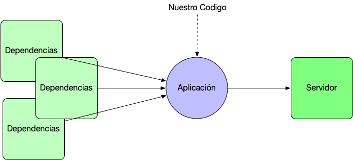

“Creando futuro con código”
Fundamentalmente existian tres pasos a realizar . El primero es crear un proyecto Maven/Gradle y descargar las dependencias necesarias. En segundo lugar esta el proceso de crear la aplicación , pero para ello nos guste o no debemos abordar un proceso amplio de configuración de la aplicación , con ficheros XML o anotaciones y configuraciones muy especificas que muchas veces solo un experto era capaz de abordar con garantias. Por último debiamos desplegarla en un servidor.
Si nos ponemos a pensar un poco a detalle en el tema , únicamente el paso dos es una tarea de desarrollo y dentro de esa tarea 2 incluso la parte de configuración no esta claro que sea desarrollo en sí. Son cosas que están más orientados a infraestructura que al desarrollo en sí mismo. No deberíamos tener que estar eligiendo continuamente las dependencias y el servidor de despliegue así como realizar una configuración inicial .Esto es un tema solo para expertos y que aporta realmente poco debería ser automatico.

Nace con la intención de simplificar los pasos 1 y 3 . Simplificar la configuración , que nos podamos centrar en el desarrollo de nuestra aplicación. ¿Cómo funciona?. El enfoque es sencillo y lo entenderemos realizando un ejemplo. Para ello nos vamos a conectarnos al asistente de Boot que se denomina Spring Initializer.
Gracias por visitar mi blog